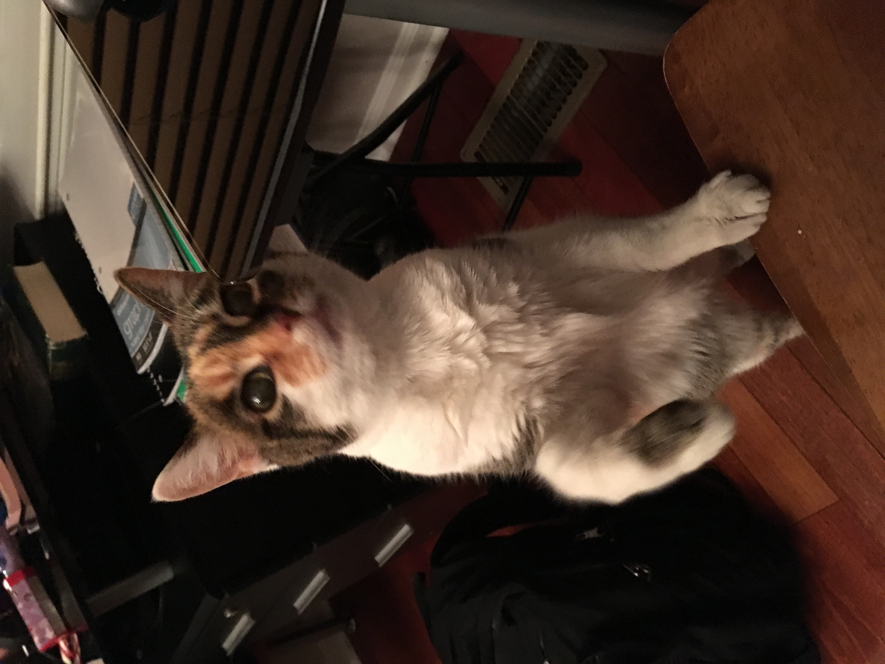
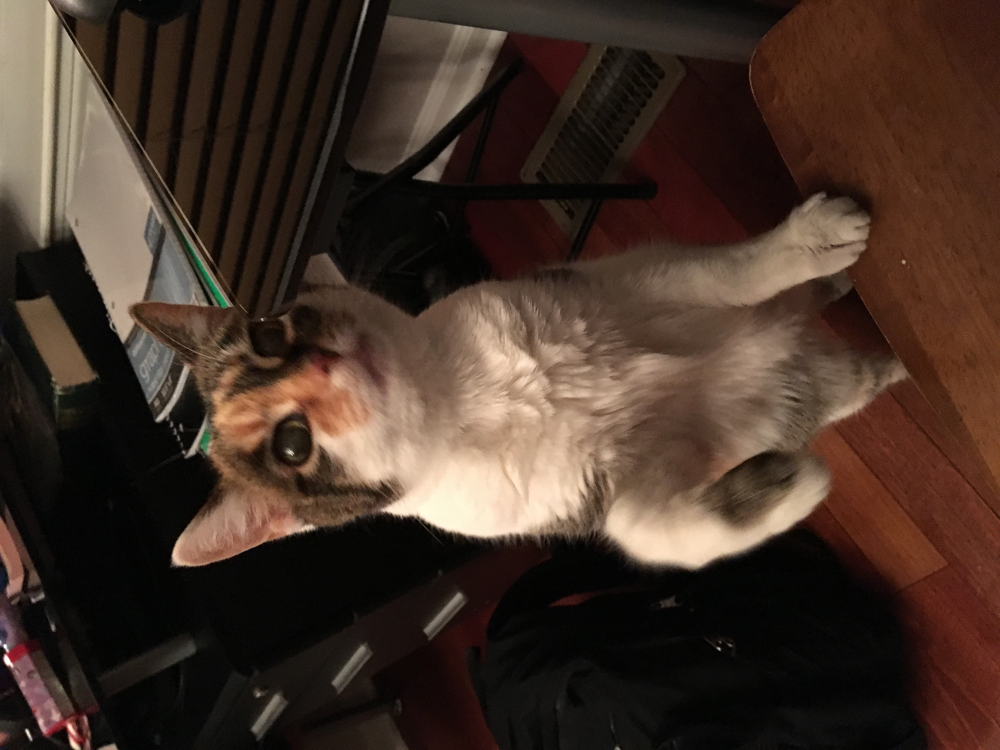
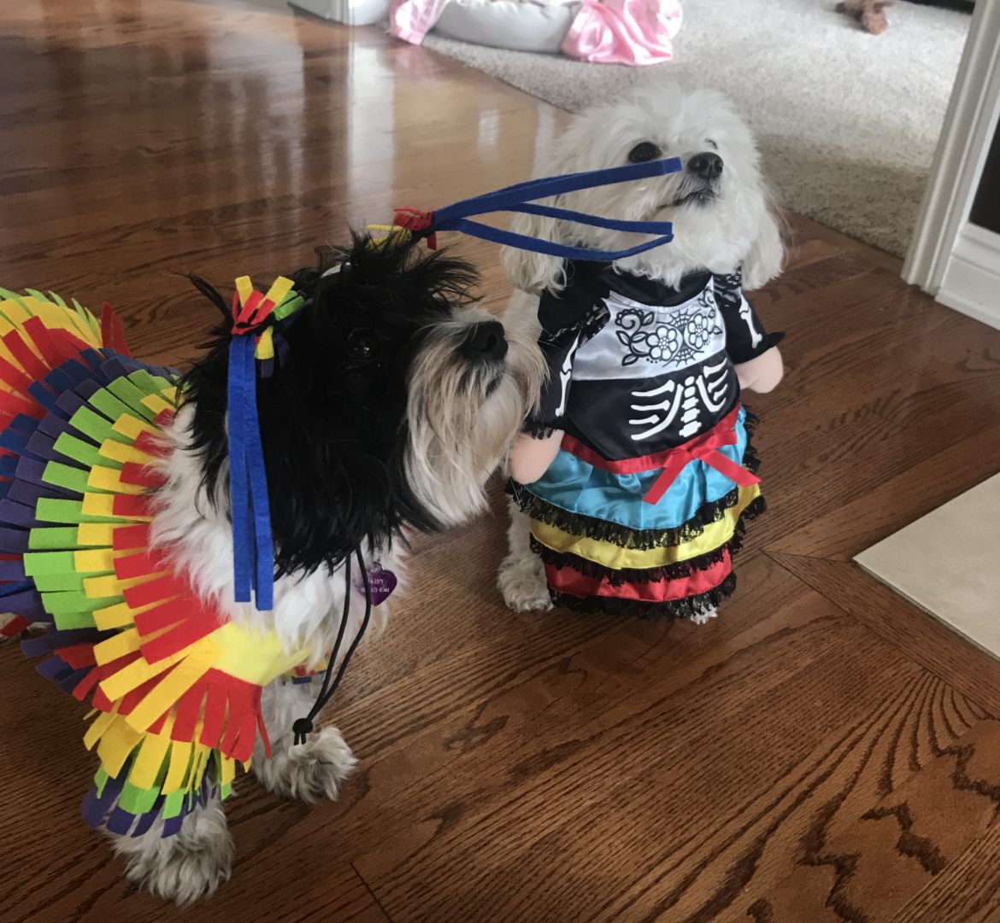
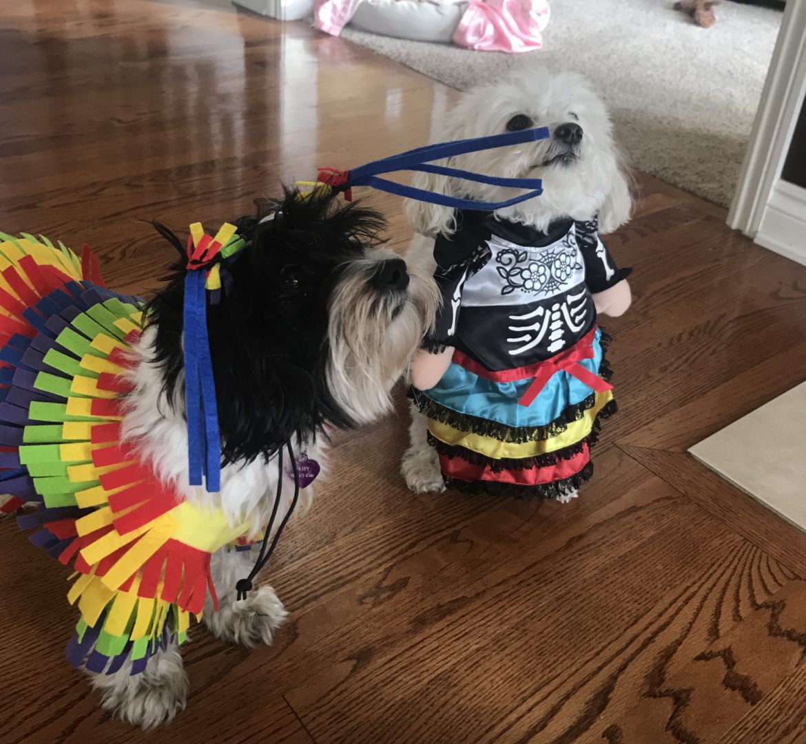

Pappy

Pappy is a 7 year old morkie. Most days he prefers to spend it laying around the house in his various favorite spots. Most of the time you can find him lying in his bed. He loves going with walks, but still hasn’t figured out how to approach other dogs without scaring them off. He loves his family and loves to keep intruders away even for his size.
He also enjoys playing with his favorite basketball. He loves pushing it around, scratching it, or even talking with it. He also loves his little stuffed animal too. Pappy also loves to be scratched and will ask you to keep scratching until he is happy.
Photo Gallery


Likes
- Taking naps with his paws in the air
- Getting scratches or belly rubs
- Any kind of dog treats
Molly

Molly is an 18 year old calico cat. She prefers spending her days lounging on the couch or curled up sleeping over a vent (or anything warm). Occasionally, she’ll go outside and attempt to hunt birds or rats (sometimes successful which is terrifying).
Molly’s favorite habit is to brush against people’s legs, especially during dinner when everyone is seated around a table. She’s an attention seeker, always meowing to get as many pets and head rubs as she possibly can.
Photo Gallery
 


Likes
- Scratching couches
- Sunbathing
- Brushing against people's legs
Biscuit

Biscuit is a 2 year old shiba inu dog. Shiba inus are energetic and playful dogs. Biscuit enjoys running outside in circles and then laying down in the grass in the sun for hours. He also likes going for occasional swims.
As energetic as Biscuit is, he also likes to relax. He loves to sleep in his dog bed and watch Netflix with his owners. His favorite treat are apples.
Photo Gallery


Likes
- Going for walks
- Swimming
- Apples
Jingle

Jingle loves going outside. He used to be an outdoor/indoor cat until we realized that he loved to get injured. Now, we take him on walks with a leash which he loves! Every time he sees me carrying the leash he goes crazy and meows to go out.
Jingle is very mischievous, he has gotten into many different accidents. His first accident was outside; a bee stung his paw and he cried all night long. The second one was ALSO outside, he got stuck on a tree for four days. Finally, he came back home one day with his tail bleeding and ripped out.
Photo Gallery


Likes
- Going on walks
- Being pet
- Eating treats
Daisy

When Daisy isn’t busy slaying all of the evil snakes trying to attack us (Pictured Above), you can usually find her annoying her older sister Marina, getting super hyper at completely random times, or relaxing in our backyard making sure she keeps out all of the intruders (squirrels)
One of Daisy’s favorite things to do is beg to go on a walk, and then once we’re about half way done with the walk she likes to lay down and refuse to keep going. She then loves being carried all the way back from said walk, and the process will repeat again later in the day.
Photo Gallery

 


Likes
- Shredded Cheese
- Walks around the neighborhood
- Peanut Butter Chex Cereal (specifically peanut butter kind)